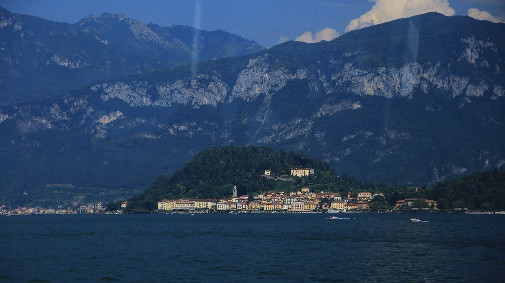

Race, Lake Como

Behind
Best +0:01
371W
Target 418 W-47 W
- Cadence
- 87rpm
- Heart
- 140bpm
- Speed
- 26.5km/h
Recover7 of 20
0:57
Next: · 0:30 at level 24
-1.2%
37 m climbed
4.52 km
19
Resistance / 32
Solo races your best-time ghost: position reads Ahead or Behind, and solo alone gets a Pause button. Frozen at 11:03.